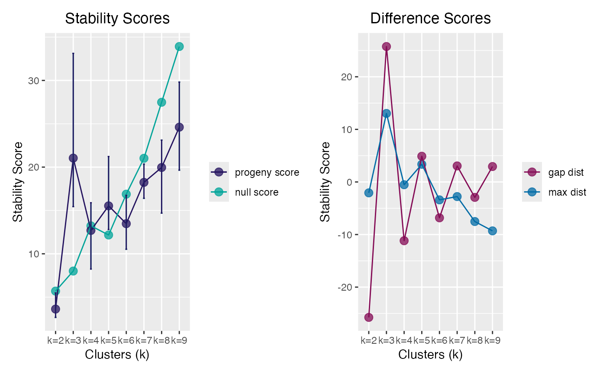
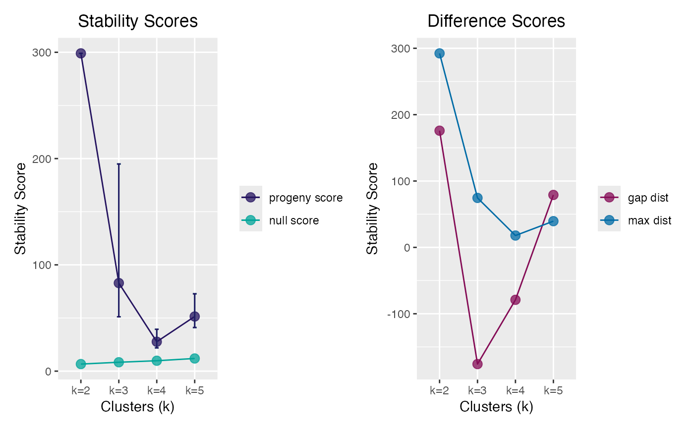

Perform Progeny Clustering
progeny_cluster.RdDetermine the most stable (optimal) number of clusters via Progeny Clustering algorithm.
The is_pclust() function checks whether
an object is class pclust. See inherits().
Usage
progeny_cluster(
data,
clust_iter = 2:10L,
reps = 10L,
verbose = interactive(),
...
)
is_pclust(x)
# S3 method for class 'pclust'
plot(x, ...)
# S3 method for class 'pclust'
print(x, ...)Arguments
- data
A (
n x p) data matrix containing n samples and p features. Can also be a data frame where each row corresponds to a sample or observation, whereas each column corresponds to a feature or variable.- clust_iter
integer(n). Span ofkclusters to interrogate- reps
integer(1). The number of repeat iterations to perform. Particularly useful if error bars during plotting are desired.- verbose
logical(1). Print the progress of the clustering repeats to the console. Defaults tointeractive().- ...
Additional parameters passed to the internal
progeny_k(), typicallyiter =andsize =. For theplot()method, arguments passed to the corresponding graphics device.- x
A
pclustclass object (or an object to be tested for one).
Value
A pclust class object, a list containing:
- scores
A matrix of stability scores for each iteration in a matrix, with
kcolumns- mean_scores
The mean stability scores for each cluster
k- ci95_scores
95% confidence interval scores
- random_scores
The reference (random) scores for each iteration at each clustering level (
k)- mean_random_scores
The mean of the reference (random) data set, i.e. column means of
random_scores- D_max
The distance between the mean stability scores and the mean reference scores for each cluster
k- D_gap
The "gap" distance metric for neighboring cluster k differences. See original paper for reference.
- clust_iter
Integer Sequence of
kclusters interrogated- repeats
The number of repeat iterations to performed
- iter
The number of progeny iterations to performed
- size
The progeny size used in each iteration
- call
The call made to
progeny_cluster()
is_pclust() returns a logical boolean.
References
Hu, C.W., Kornblau, S.M., Slater, J.H. and A.A. Qutub (2015). Progeny Clustering: A Method to Identify Biological Phenotypes. Scientific Reports, 5:12894. http://www.nature.com/articles/srep12894
See also
Other cluster:
stability_cluster()
Examples
# `iter=` and `size=` are passed to `progeny_k()`
pclust <- withr::with_seed(1234,
progeny_cluster(progeny_data, clust_iter = 2:9L, iter = 20L, size = 6)
)
pclust
#> ══ Progeny Cluster Object ═════════════════════════════════════════════
#> Call progeny_cluster(data = progeny_data, clust_iter = 2:9L, iter = 20L, size = 6)
#> Progeny Size 6
#> No. of Iterations 20
#> K Iterations 2 3 4 5 6 7 8 9
#>
#> ── Mean & CI95 Stability Scores ───────────────────────────────────────
#> k=2 k=3 k=4 k=5 k=6 k=7 k=8 k=9*
#> 2.5% 2.66 15.4 8.24 12.8 10.5 16.4 14.7 19.6
#> 3.63 21.0 12.70 15.5 13.5 18.2 20.0 24.6
#> 97.5% 5.49 33.1 15.89 21.2 16.7 20.4 23.1 29.8
#>
#> ── Maximum Distance Scores ────────────────────────────────────────────
#> k=2 k=3* k=4 k=5 k=6 k=7 k=8 k=9
#> -2.073 13.031 -0.526 3.361 -3.404 -2.778 -7.524 -9.303
#>
#> ── Gap Distance Scores ────────────────────────────────────────────────
#> k=2 k=3* k=4 k=5 k=6 k=7 k=8 k=9
#> -25.76 25.76 -11.17 4.89 -6.82 3.05 -2.93 2.93
#> ═══════════════════════════════════════════════════════════════════════
# Test progeny clustering on iris data set
# Doesn't work quite as well as the simulated data set
clust_iris <- withr::with_seed(99,
progeny_cluster(iris[, -5L], clust_iter = 2:5L, size = 6L, iter = 50)
)
#> Warning: did not converge in 20 iterations
#> Warning: did not converge in 20 iterations
clust_iris # true n clusters = 3
#> ══ Progeny Cluster Object ═════════════════════════════════════════════
#> Call progeny_cluster(data = iris[, -5L], clust_iter = 2:5L, size = 6L, iter = 50)
#> Progeny Size 6
#> No. of Iterations 50
#> K Iterations 2 3 4 5
#>
#> ── Mean & CI95 Stability Scores ───────────────────────────────────────
#> k=2* k=3 k=4 k=5
#> 2.5% 299 51.2 21.9 41.0
#> 299 82.9 27.6 51.4
#> 97.5% 299 194.9 39.4 72.8
#>
#> ── Maximum Distance Scores ────────────────────────────────────────────
#> k=2* k=3 k=4 k=5
#> 292.4 74.5 17.9 39.5
#>
#> ── Gap Distance Scores ────────────────────────────────────────────────
#> k=2* k=3 k=4 k=5
#> 176 -176 -79 79
#> ═══════════════════════════════════════════════════════════════════════
# Test for class `pclust`
is_pclust(pclust)
#> [1] TRUE
# S3 plot method
plot(pclust)

plot(clust_iris)
